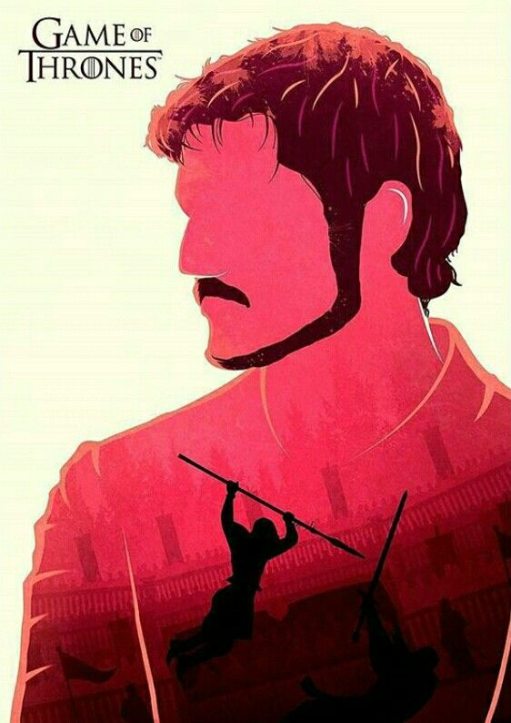
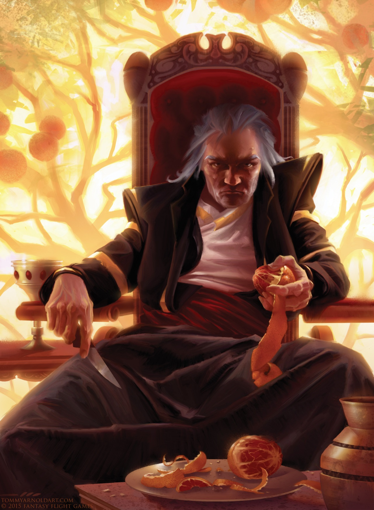
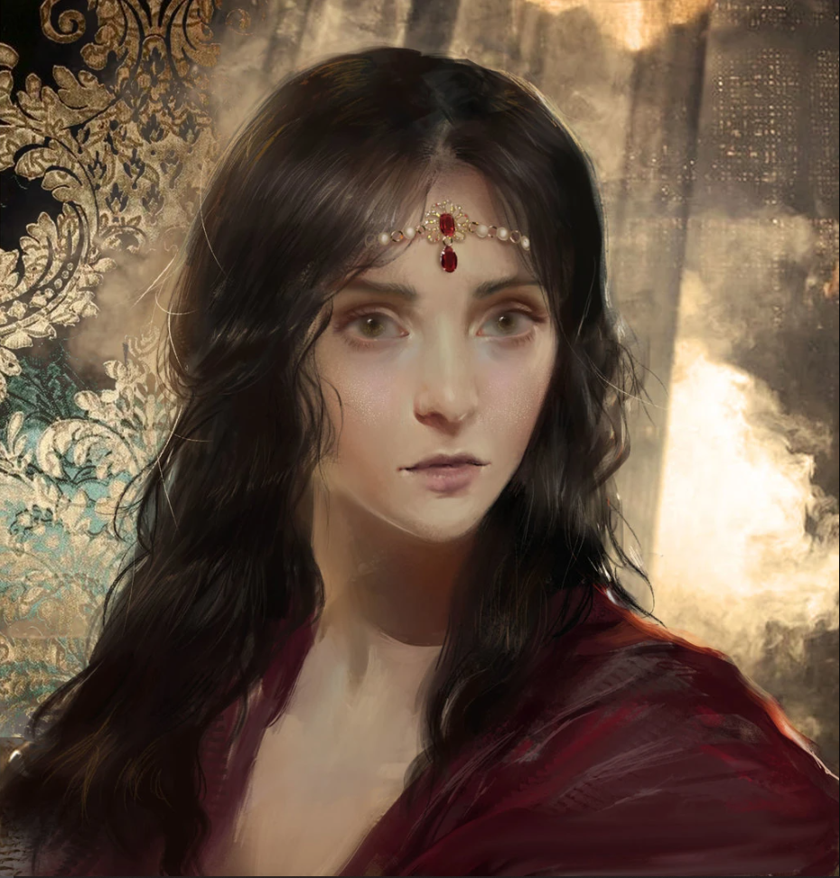
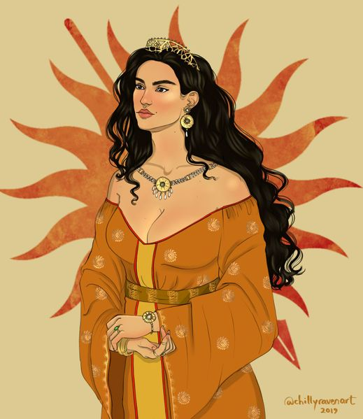
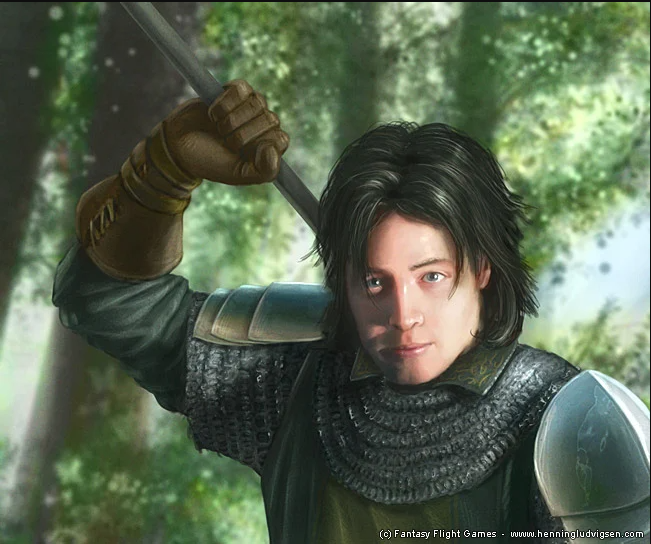

Nuestros queridos miembros en la casa Martell

Oberyn Martell
conocido como “La Víbora Roja”. Es probablemente el miembro más popular de la casa. Oberyn era carismático, extremadamente inteligente, rápido en combate y experto en venenos. Además, Oberyn representa perfectamente el carácter dorniano: apasionado, provocador y orgulloso.

Doran Martell
Hermano mayor de Oberyn y príncipe gobernante de Dorne. A diferencia de Oberyn, Doran es calmado, paciente y muy estratégico. Aunque muchos lo consideran débil por evitar guerras inmediatas, en realidad planea cuidadosamente cómo vengarse de las casas responsables de la muerte de su familia. Su forma de actuar muestra que los Martell suelen preferir la política y la paciencia antes que actuar impulsivamente.

Elia Martell
hermana de Doran y Oberyn. Ella estaba casada con Rhaegar Targaryen y murió brutalmente durante la rebelión de Robert Baratheon. Su muerte es una de las principales razones del odio y deseo de venganza de los Martell hacia los Lannister y Gregor Clegane.

Arianne Martell
Heredera directa de Doran. Una figura calculadora y ambiciosa que busca asegurar el poder para su casa frente a los constantes cambios políticos.
